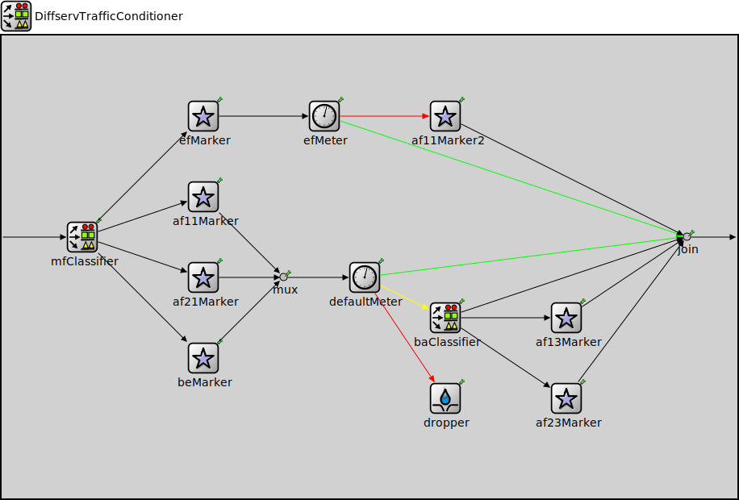

Package: inet.showcases.general.diffserv
DiffservTrafficConditioner
compound moduleTODO documentation
Usage diagram
The following diagram shows usage relationships between types. Unresolved types are missing from the diagram.
Inheritance diagram
The following diagram shows inheritance relationships for this type. Unresolved types are missing from the diagram.
Parameters
| Name | Type | Default value | Description |
|---|---|---|---|
| interfaceTableModule | string |
Properties
| Name | Value | Description |
|---|---|---|
| display | i=block/classifier |
Gates
| Name | Direction | Size | Description |
|---|---|---|---|
| in | input | ||
| out | output |
Unassigned submodule parameters
| Name | Type | Default value | Description |
|---|---|---|---|
| mfClassifier.displayStringTextFormat | string | "classified %p pk (%l)" |
determines the text that is written on top of the submodule |
| mfClassifier.reverseOrder | bool | false | |
| efMeter.interfaceTableModule | string |
The path to the InterfaceTable module |
|
| efMeter.cir | string |
committed information rate, either absolute bitrate (e.g. "100kbps"), or relative to the link's datarate (e.g. "20%") |
|
| efMeter.cbs | int |
committed burst size |
|
| efMeter.colorAwareMode | bool | false |
enables color-aware mode |
| mux.displayStringTextFormat | string | "passed %p pk (%l)" |
determines the text that is written on top of the submodule |
| mux.forwardServiceRegistration | bool | true | |
| mux.forwardProtocolRegistration | bool | true | |
| defaultMeter.interfaceTableModule | string |
The path to the InterfaceTable module |
|
| defaultMeter.cir | string |
committed information rate, either absolute bitrate (e.g. "100kbps"), or relative to the link's datarate (e.g. "20%") |
|
| defaultMeter.cbs | int |
committed burst size |
|
| defaultMeter.ebs | int |
excess burst size |
|
| defaultMeter.colorAwareMode | bool | false |
enables color-aware mode |
| efMarker.displayStringTextFormat | string | "processed %p pk (%l)" |
determines the text that is written on top of the submodule |
| af11Marker.displayStringTextFormat | string | "processed %p pk (%l)" |
determines the text that is written on top of the submodule |
| af21Marker.displayStringTextFormat | string | "processed %p pk (%l)" |
determines the text that is written on top of the submodule |
| af13Marker.displayStringTextFormat | string | "processed %p pk (%l)" |
determines the text that is written on top of the submodule |
| af23Marker.displayStringTextFormat | string | "processed %p pk (%l)" |
determines the text that is written on top of the submodule |
| join.displayStringTextFormat | string | "passed %p pk (%l)" |
determines the text that is written on top of the submodule |
| join.forwardServiceRegistration | bool | true | |
| join.forwardProtocolRegistration | bool | true | |
| beMarker.displayStringTextFormat | string | "processed %p pk (%l)" |
determines the text that is written on top of the submodule |
| baClassifier.displayStringTextFormat | string | "classified %p pk (%l)" |
determines the text that is written on top of the submodule |
| baClassifier.reverseOrder | bool | false | |
| af11Marker2.displayStringTextFormat | string | "processed %p pk (%l)" |
determines the text that is written on top of the submodule |
| dropper.displayStringTextFormat | string | "received %p pk (%l)" |
determines the text that is written on top of the submodule |
| dropper.clockModule | string | "" |
relative path of a module that implements IClock(1,2); optional |
| dropper.initialConsumptionOffset | double | 0s |
initial duration before which packets are not consumed |
| dropper.consumptionInterval | double | 0s |
elapsed time between subsequent packets allowed to be pushed by the connected packet producer, 0 means any number of packets can be pushed at the same simulation time |
| dropper.scheduleForAbsoluteTime | bool | true |
when a clock is used relative means that setting the clock will not affect the simulation time of the event |
Source code
// // TODO documentation // module DiffservTrafficConditioner like ITrafficConditioner { parameters: string interfaceTableModule; *.interfaceTableModule = default(absPath(this.interfaceTableModule)); @display("i=block/classifier"); gates: input in; output out; submodules: mfClassifier: MultiFieldClassifier { filters = xmldoc("filters.xml"); @display("p=100,250"); } efMeter: TokenBucketMeter { @display("p=400,100"); } mux: PacketMultiplexer { @display("p=350,300"); } defaultMeter: SingleRateThreeColorMeter { @display("p=450,300"); } efMarker: DscpMarker { dscps = "EF"; @display("p=250,100"); } af11Marker: DscpMarker { dscps = "AF11"; @display("p=250,200"); } af21Marker: DscpMarker { dscps = "AF21"; @display("p=250,300"); } af13Marker: DscpMarker { dscps = "AF13"; @display("p=700,350"); } af23Marker: DscpMarker { dscps = "AF23"; @display("p=700,450"); } join: PacketMultiplexer { @display("p=850,250"); } beMarker: DscpMarker { dscps = "BE"; @display("p=250,400"); } baClassifier: BehaviorAggregateClassifier { dscps = "AF11 AF21"; @display("p=550,350"); } af11Marker2: DscpMarker { dscps = "AF11"; @display("p=550,100"); } dropper: PassivePacketSink { @display("p=550,450"); } connections: in --> mfClassifier.in; mfClassifier.out++ --> efMarker.in++; mfClassifier.out++ --> af11Marker.in++; mfClassifier.out++ --> af21Marker.in++; mfClassifier.defaultOut --> beMarker.in++; efMarker.out --> efMeter.in; efMeter.greenOut --> { @display("ls=green"); } --> join.in++; efMeter.redOut --> { @display("ls=red"); } --> af11Marker2.in++; af11Marker2.out --> join.in++; af11Marker.out --> mux.in++; af21Marker.out --> mux.in++; beMarker.out --> mux.in++; mux.out --> defaultMeter.in; defaultMeter.greenOut --> { @display("ls=green"); } --> join.in++; defaultMeter.yellowOut --> { @display("ls=yellow"); } --> baClassifier.in; baClassifier.out++ --> af13Marker.in++; baClassifier.out++ --> af23Marker.in++; baClassifier.defaultOut --> join.in++; af13Marker.out --> join.in++; af23Marker.out --> join.in++; join.out --> out; defaultMeter.redOut --> { @display("ls=red"); } --> dropper.in; }File: showcases/general/diffserv/DiffservTrafficConditioner.ned
 This documentation is released under the Creative Commons license
This documentation is released under the Creative Commons license